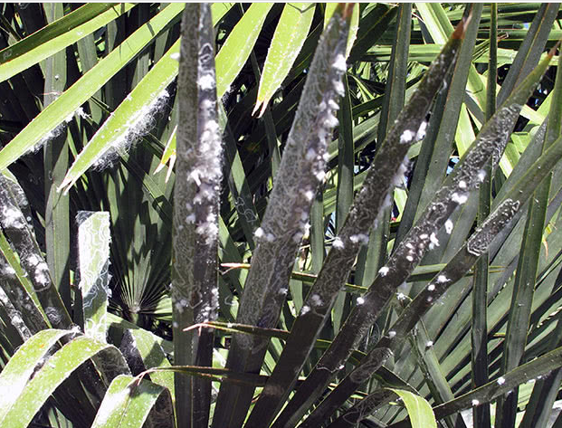

Білокрилки(лат. Aleyrodidae), або алейродиди - це родина дрібних рівнокрилих комах, що налічує понад 1500 видів. Наукова назва родини походить від грецького слова, що означає в перекладі «борошно», і пов'язано це з борошнистим нальотом на крилах комах. Білокрилки є небезпечними шкідниками, здатними завдати серйозної шкоди як садовим, так і кімнатним рослинам. Проникають вони й у теплиці.
У статті ми розповімо вам, як виглядає білокрилка, якої вона завдає шкоди рослинам і як боротися з білокрилкою в теплиці, у саду і на кімнатних рослинах.
Шкідник білокрилка – опис
При всьому різноманітті видів цього шкідника в довжину представники родини сягають від 1,3 до 3 мм. За зовнішнім виглядом вони трохи схожі на молеподібних лускокрилих. У них біле або жовтувато-червоне тіло з темними цятками, а їхні 4 крила, що складаються будиночком, укриті білим борошнистим пилоподібним нальотом. Рухливі в молодому віці личинки білокрилок харчуються соком рослин. Потім вони закріплюються на споді листків. Деякі види білокрилок – небезпечні карантинні шкідники.
Ще по темі: цикламеновий кліщ / phytonemus pallidus
Як можна визначити, що на рослинах оселилися білокрилки? Якщо від дотику вгору злітають білі мошки, схожі на крихітну міль, якщо на споді листової пластини з'явилися напівпрозорі лусочки – личинки шкідника, якщо на листках і стеблах рослини виникають хлоротичні жовті плями, а потім утворюється липкий наліт – медяна роса, або падь, яка є відходом життєдіяльності білокрилки, а рослина відстає у рості й розвитку, значить, на ній паразитують білокрилки.
Білокрилка любить поєднання високої температури з високою вологістю, ось чому ця комаха добре розмножується в оранжереях і теплицях. 10 ºC – убивча для шкідника температура, при якій припиняються всі його життєві процеси, і тільки яйця успішно переживають зиму.
Білокрилка не тільки небезпечний шкідник, а й переносник грибкових і невиліковних вірусних захворювань: мозаїки, кучерявості, борошнистої роси, сірої гнилі та інших.
Білокрилка в теплиці – як позбутися
Засоби від білокрилок (препарати)
До хімічних препаратів проти білокрилки вдаються, коли всі інші способи боротьби вже випробувані. Препарати від білокрилки, безумовно, впораються зі шкідником, як не за один, то за кілька сеансів, але слід розуміти, що вони набагато токсичніші, ніж народні засоби. До найкращих інсектицидів належать:
-
Актара – системний препарат тривалої дії (від 3 до 5 тижнів), водний розчин якого просто заливають під корінь рослини, але в особливо запущених випадках слід також обробити культуру по листю. Допустимі 3 сеанси обробки з тижневою перервою, але професіонали рекомендують знищити шкідника за один раз концентрованим розчином Актари (у 3-4 рази міцнішим, аніж вказано в інструкції);
-
Конфідор – інсектицид системної і контактної дії, від якого шкідник гине вже за півтори години після обробки. Діюча речовина, що знищує білокрилок, у різній концентрації присутній також у препаратах Копфідор, Гаучо, Адмір, Марафон, Командор, Провадо, Апплаунд;
-
Акарін (Аграверін) – інсектоакарицид контактно-кишкової дії, що знищує практично всіх шкідників, зокрема павукоподібних. Використовується препарат для обробки рослин по листю, причому важливо, щоб він потрапив безпосередньо на шкідників;
-
Іскра (Біо, Золота, Подвійний ефект) – цим препаратом можна розправитися зі шкідником за один сеанс. У продаж Іскра надходить у вигляді порошку, розчинних у воді таблеток, в ампулах і паличках тривалої дії. При поливі інсектицид проникає в коріння і тканини рослин, де утримується впродовж 3 тижнів, отруюючи білокрилок і їхні личинки;
-
Фітоверм – інсектоакарицид від практично будь-яких шкідників. Фітоверм від білокрилки застосовується у вигляді водного розчину, яким 1-2 рази обробляють рослину по листю – цього, як правило, досить, щоби знищити всю популяцію комах;
-
Актеллік – інсектоакарицид проти комах і кліщів. Слід знати, що цей препарат має сильний неприємний запах, до того ж він дуже токсичний, тому застосовувати його краще в відкритому ґрунті та з дотриманням усіх необхідних запобіжних заходів;
-
Танрек – інсектицид кишково-контактної дії, який чудово показав себе в боротьбі з багатьма комахами-шкідниками. Ефективний Танрек і від білокрилки, особливо на рослинах із голим гладким листям. Опушені рослини краще обприскувати з дрібнодисперсного розпилювача.
Окрім описаних препаратів, ефект у боротьбі з білокрилками показали Фуфанон, Алатар, Топ-стар, Ровікурт, Інта-Вір, Зета, Піретрум, Ф'юрі, Талстар, Циперметрин, Неудосан, Екамет, Децис, Амбуш, Арріво й інші інсектициди.
Ще по темі: трипс / thrips